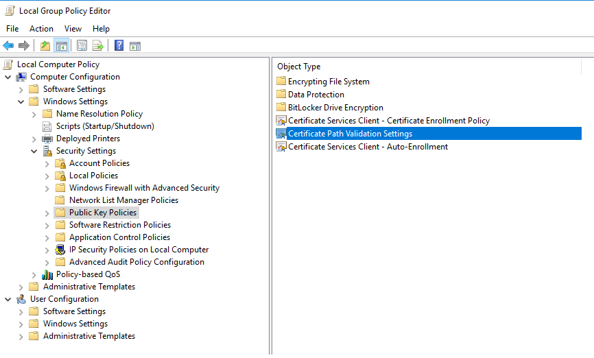
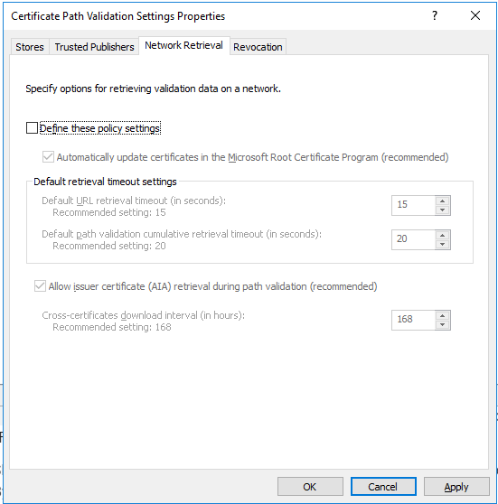
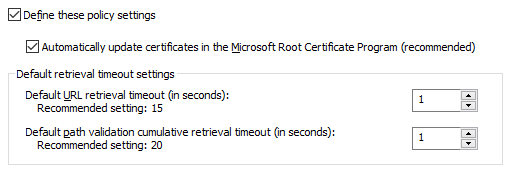

Summary
If SbPAM, or an SbPAM proxy service, is installed on a server without internet connectivity, it may become impossible for the SbPAM proxy to initiate SSL handshakes. The following error message when registering a proxy service is indicative of this problem:TLS Authentication error One or more errors occurred. (Unable to read data from the transport connection: An established connection was aborted by the software in your host machine.)This issue can be resolved by reducing the timeout setting in Windows that governs CRL (certificate revocation list) checks. Since these CRL checks require internet access, the timeout should be reduced to the minimum possible value when internet connectivity is not present.
Instructions
This timeout setting is governed by a group policy. The following steps will allow it to be configured:1. Open up Group Policy Editor (gpedit.msc)
2. Navigate to Computer Configuration > Windows Settings > Security Settings > Public Key Policies

3. Double-click on "Certificate Path Validation Settings" and go to the "Network Retrieval" tab.

4. Check the "Define these policy settings" box, and reduce both "Default retrieval timeout settings" to "1"

5. Hit "Apply" to save the configuration.